The University of British Columbia
Vancouver, CanadaPostdoctoral Research Fellow, Department of Electrical and Computer EngineeringSep. 2025 – Present
Lab: Trusted and Efficient AI Lab
Supervisor: Xiaoxiao Li
I am a Postdoctoral Research Fellow in the Department of Electrical and Computer Engineering at The University of British Columbia, supervised by Xiaoxiao Li. My research interests involve leveraging AI in the medical field to improve its robustness, reliability, and trustworthiness.
I received my Ph.D. from DGIST, where I conducted my research in the Medical Image & Signal Processing Lab, supervised by Sang Hyun Park. During my Ph.D., I was a visiting scholar at Stanford University, supervised by Kilian M. Pohl and Ehsan Adeli.
Lab: Trusted and Efficient AI Lab
Supervisor: Xiaoxiao Li
Thesis: Reliable Representation Learning for Multi-Institutional Medical Image Analysis
Lab: Medical Image & Signal Processing Lab
Supervisor: Sang Hyun Park
Lab: Computational Neuroscience Laboratory
Supervisors: Kilian M. Pohl & Ehsan Adeli
* Equal contribution · Full list on Google Scholar
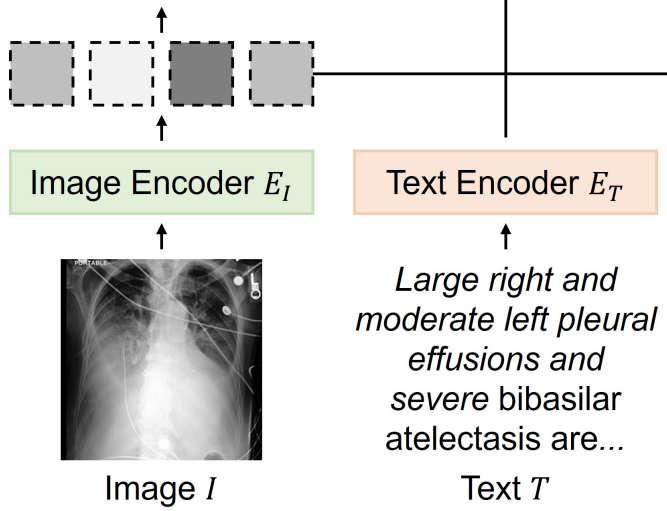
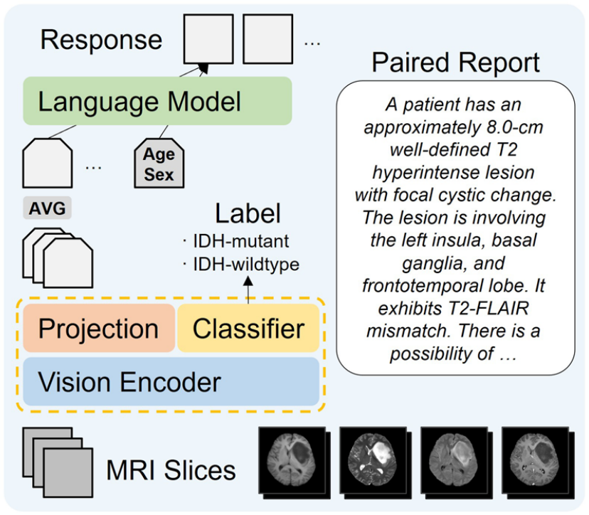
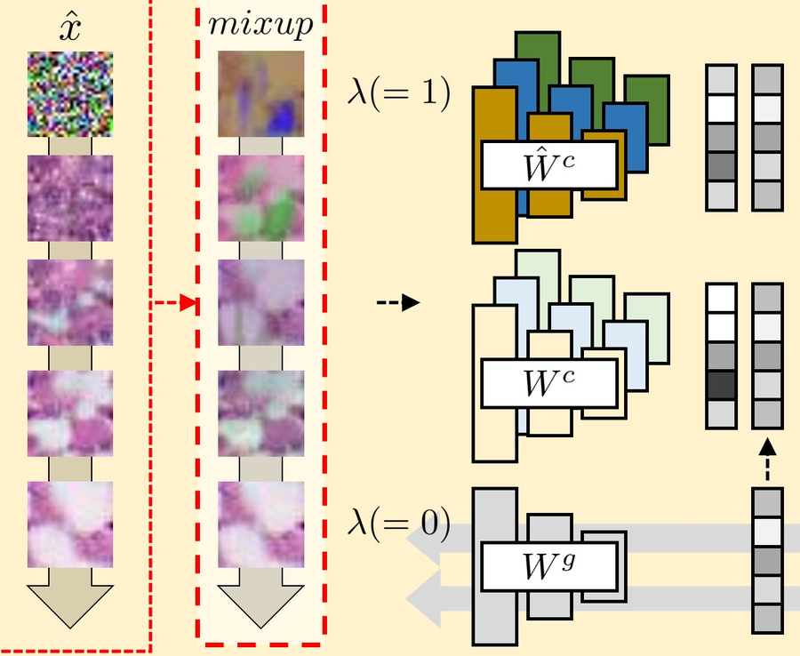
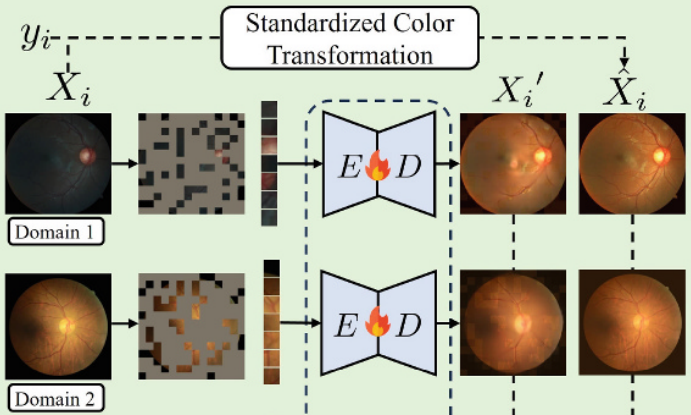
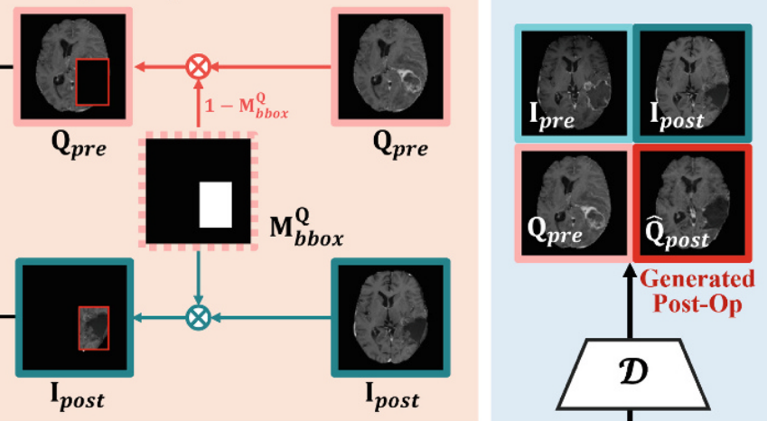
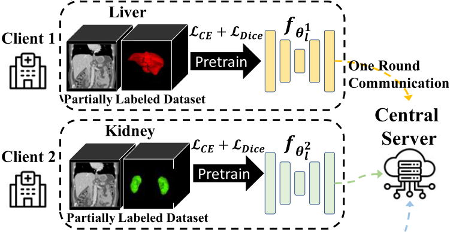
IEEE Transactions on Medical Imaging, 2025
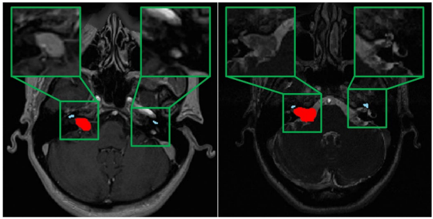
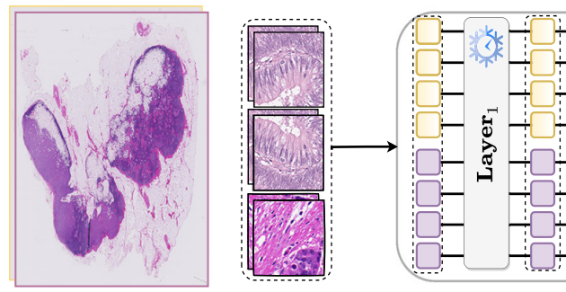
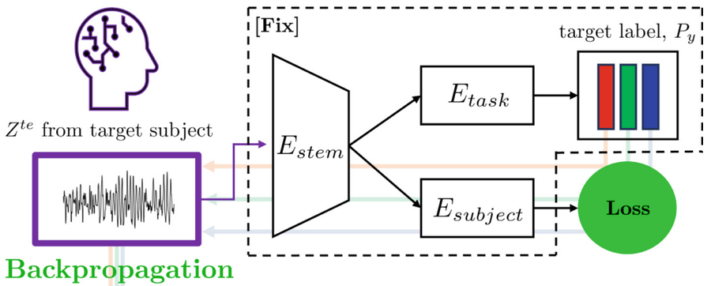
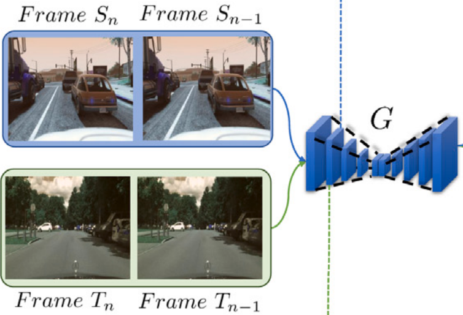
Neural Networks, 2024
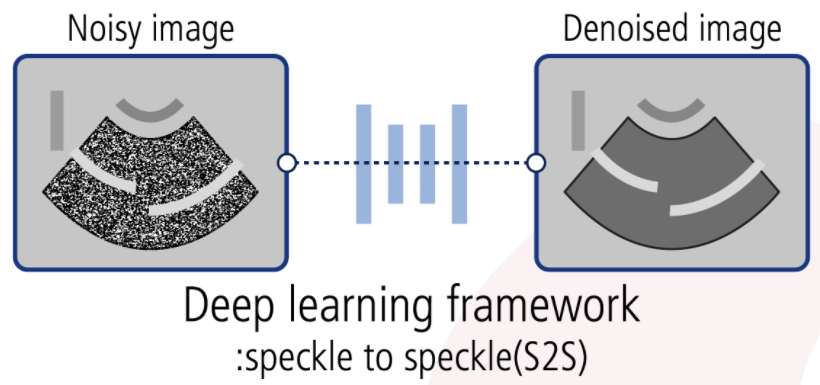
Ultrasonography, 2024
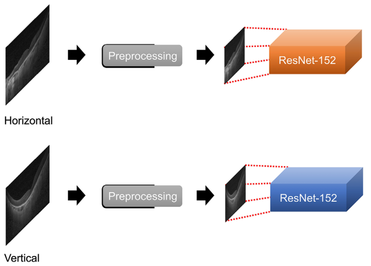
Translational Vision Science & Technology, 2024
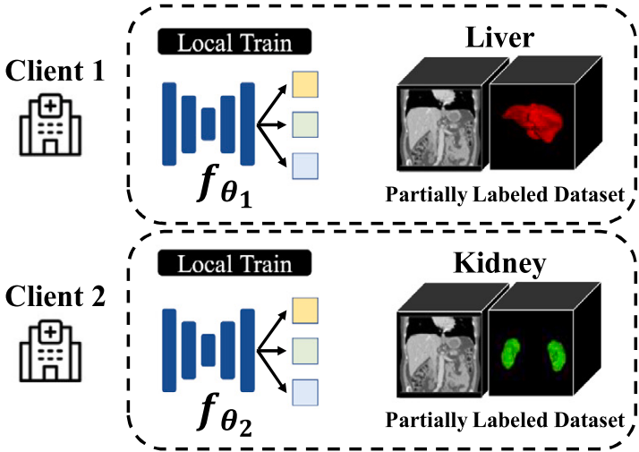
Medical Image Analysis, 2024
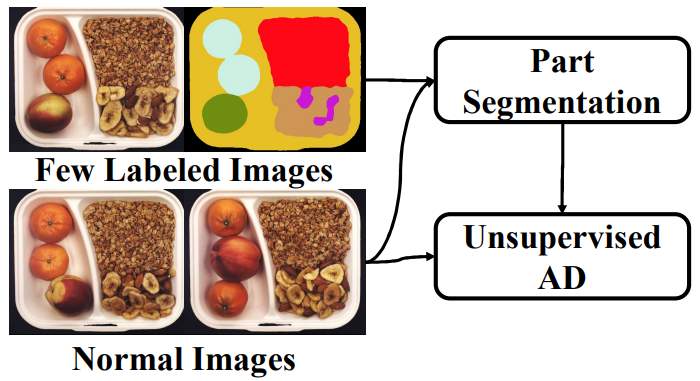
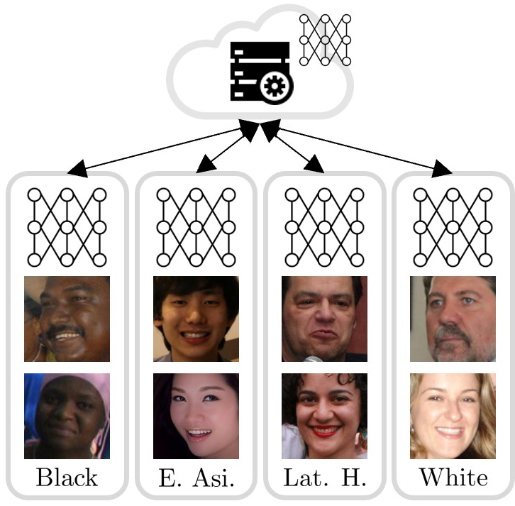
Pattern Recognition, 2024
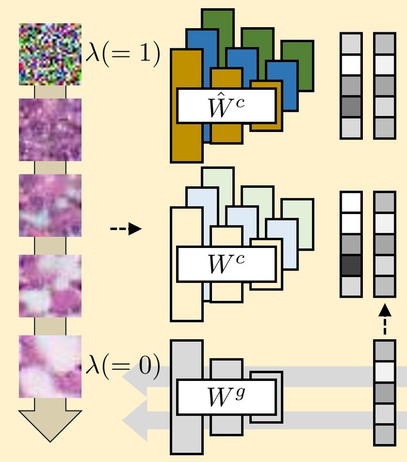
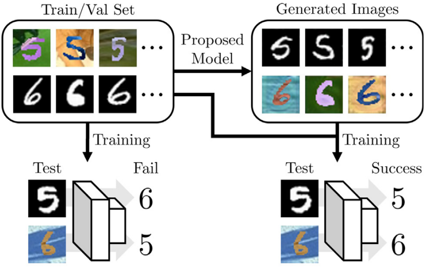
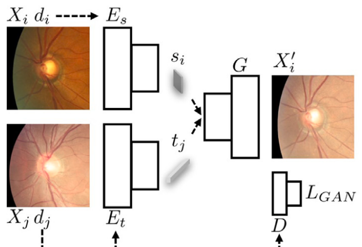
Pattern Recognition, 2023
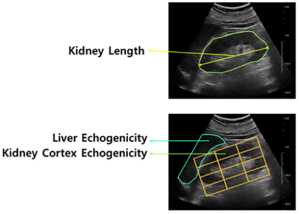
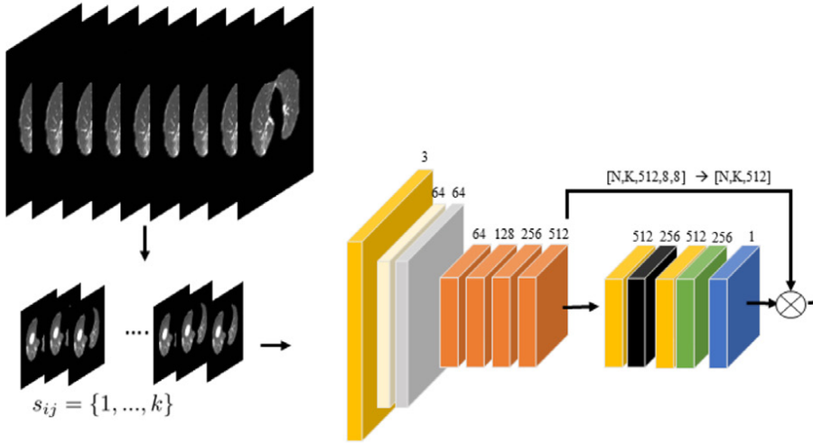
Medical Image Analysis, 2021
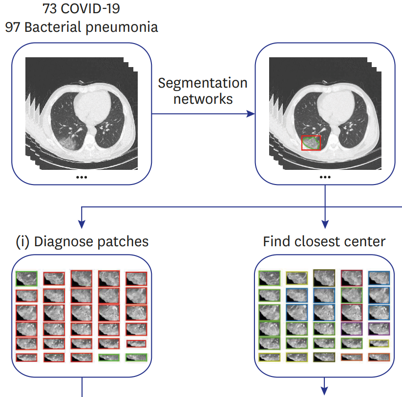
Journal of Korean Medical Science, 2021